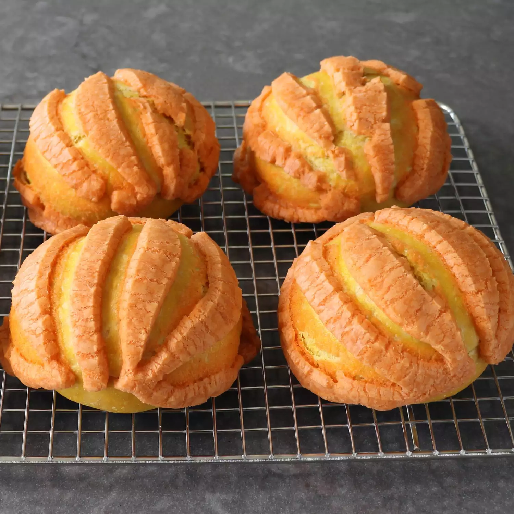

Pumpkin Conchas

Description
Got pumpkins? Go make pumpkin balls!
Long yet satifying recipe, having ingredients that are best fit for holidays!
Ingredients
Dough:
- 2 ¼ cups all-purpose flour
- ½ cup pumpkin puree
- ¼ cup warm milk
- 1 large egg yolk
- 2 tablespoons butter, melted
- 2 tablespoons white sugar
- 1 (.25 ounce) package active dry yeast
- 1 teaspoon kosher salt
- ⅛ teaspoon vanilla extract
Topping:
- ½ cup powdered sugar
- ½ cup all-purpose flour
- 1 pinch kosher salt
- ¼ teaspoon ground cinnamon
- ⅛ teaspoon ground allspice
- 1 pinch ground nutmeg
- ⅛ teaspoon vanilla extract
- ¼ cup butter, at room temperature
- orange food coloring (Optional... but is a must!!)
Directions
- Place the dough in a lightly greased mixing bowl, cover, and let rise in a warm place until doubled in size, about 2 hours.
- While dough is rising, combine powdered sugar, flour, butter, cinnamon, allspice, nutmeg, salt, and vanilla extract in a bowl for the topping. Mix with your hands or a spatula until a moldable dough forms. Mix in orange food coloring if you like.
- Divide topping dough into 6 equal portions and shape them into balls; set onto a parchment lined baking sheet. Cover each ball with a sheet of plastic and press down with something flat and heavy (like the bottom of a glass or measuring cup) into a flat circle. Take the tip of a knife and score a pumpkin design into the topping. Place in the refrigerator to allow butter to firm up.
- After the dough rises, transfer it onto a work surface and press down to remove the air. Cut into 6 equal portions and roll each portion into a smooth ball. Transfer balls onto a Silpat-lined baking sheet and press down to flatten lightly. Place the topping on top of the dough balls. Allow to proof until doubled in size, about 45 minutes.
- Preheat the oven to 375 degrees F (190 degrees C).
- Bake in the center of a preheated oven until puffed up and golden, about 20 minutes. Allow to cool to room temperature, about 20 minutes.
sauce